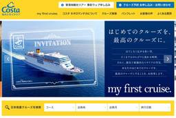

TRAICY（トライシー）
https://www.traicy.com/
TRAICY（トライシー）は、航空・LCC・鉄道・ホテル・ゲストハウス・バックパッカーズの最新情報を発信している、日本最大級のトラベルメディアです。
フィード

ANA、国際線の機内食監修「THE CONNOISSEURS」が14年目 12月から新シーズン
TRAICY（トライシー）
全日本空輸（ANA）は、国際線の機内食と飲料を監修するシェフチーム「THE CONNOISSEURS（ザ・コノシュアーズ）」の14年目となる新シーズンを12月から開始する。 THE CONNOISSEURSは、国内外の著 […]投稿 ANA、国際線の機内食監修「THE CONNOISSEURS」が14年目 12月から新シーズン は TRAICY（トライシー） に最初に表示されました。
8時間前

「EN HOTEL Tokyo Kamata」、12月1日開業 旧アイホテル京急蒲田
TRAICY（トライシー）
エンホテルズ&リゾーツは、「EN HOTEL Tokyo Kamata」を12月1日に開業する。 建物は12階建て。客室は既存の100室から、ダブル77室、バンクファミリー11室、ツイン1室の全89室に減室し、バンクベッ […]投稿 「EN HOTEL Tokyo Kamata」、12月1日開業 旧アイホテル京急蒲田 は TRAICY（トライシー） に最初に表示されました。
8時間前
HIS、「ブラックフライデー」で首都圏発ミステリーツアー6コースを販売 11月21日午前11時から販売
TRAICY（トライシー）
エイチ・アイ・エス（HIS）は、「ブラックフライデー」で、行き先が分からないミステリーツアーを11月21日午前11時から販売する。 首都圏発では、東京/成田発のアジアミステリーツアー3日間が30,000円、自由気ままにア […]投稿 HIS、「ブラックフライデー」で首都圏発ミステリーツアー6コースを販売 11月21日午前11時から販売 は TRAICY（トライシー） に最初に表示されました。
10時間前

ANA、国際線特典航空券で減額マイル 11月24日まで、ブラックフライデーキャンペーン
TRAICY（トライシー）
全日本空輸（ANA）は、ブラックフライデーで「ANA国際線特典航空券 減額マイルキャンペーン」を11月20日から24日まで実施している。 対象路線は、東京/成田〜上海/浦東・大連・杭州・バンコク・シンガポール・ジャカルタ […]投稿 ANA、国際線特典航空券で減額マイル 11月24日まで、ブラックフライデーキャンペーン は TRAICY（トライシー） に最初に表示されました。
18時間前
エア・ドゥ、機材整備で欠航便 11月26日〜29日に計8便
TRAICY（トライシー）
AIRDO（エア・ドゥ）は、整備計画の変更に伴い、一部の便で欠航が発生していることを明らかにした。 欠航となる対象日・便は、東京/羽田〜札幌/千歳線が11月26日のHD23/16便、27日のHD16便、28日のHD23/ […]投稿 エア・ドゥ、機材整備で欠航便 11月26日〜29日に計8便 は TRAICY（トライシー） に最初に表示されました。
19時間前

ピーチ、ユミルリンクへの不正アクセスで約899万件の個人情報が漏えい
TRAICY（トライシー）
ピーチ・アビエーションは、メールマガジンや各種通知メールの配信に利用しているユミルリンクのメール配信サービス「Cuenote FC」が第三者による不正アクセスを受け、同社が保有する顧客の個人情報が漏えいしたと発表した。 […]投稿 ピーチ、ユミルリンクへの不正アクセスで約899万件の個人情報が漏えい は TRAICY（トライシー） に最初に表示されました。
1日前
ANA、ブラックフライデーで減額マイルキャンペーン 全路線対象、11月24日まで
TRAICY（トライシー）
全日本空輸（ANA）は、ブラックフライデーで「ANA国内線減額マイルキャンペーン」を11月20日から24日まで開催する。 2027年1月7日から2月28日まで搭乗分の国内線特典航空券が対象で、直行旅程に限り全路線で通常よ […]投稿 ANA、ブラックフライデーで減額マイルキャンペーン 全路線対象、11月24日まで は TRAICY（トライシー） に最初に表示されました。
1日前
ヤフートラベル、「超得ブラックフライデー」を開催中 12月1日正午まで
TRAICY（トライシー）
LINEヤフーは、旅行予約サイト「Yahoo!トラベル（ヤフートラベル）」で、「超得ブラックフライデー」を11月19日正午から12月1日正午まで開催している。 対象ホテルの2名1室の料金一例は、メルキュール和歌山串本リゾ […]投稿 ヤフートラベル、「超得ブラックフライデー」を開催中 12月1日正午まで は TRAICY（トライシー） に最初に表示されました。
1日前

スプリング・ジャパン、6路線で冬スケジュールの航空券追加販売
TRAICY（トライシー）
スプリング・ジャパンは、東京/成田〜ハルビン・天津・寧波・札幌/千歳・函館線と名古屋/中部〜札幌/千歳線で、冬スケジュールの航空券追加販売を実施する。 運航期間は2027年1月1日から3月27日までで、路線によって異なる […]投稿 スプリング・ジャパン、6路線で冬スケジュールの航空券追加販売 は TRAICY（トライシー） に最初に表示されました。
1日前

寝台特急「サンライズ出雲・瀬戸」、車両故障で11月20日から23日まで運休 3連休に影響
TRAICY（トライシー）
JR東日本らは、寝台特急「サンライズ出雲・瀬戸」を11月20日から23日まで運休すると発表した。車両故障によるもの。 運休するのは、20日〜23日発（始発駅基準）の「サンライズ出雲」（東京〜出雲市駅間）と、「サンライズ瀬 […]投稿 寝台特急「サンライズ出雲・瀬戸」、車両故障で11月20日から23日まで運休 3連休に影響 は TRAICY（トライシー） に最初に表示されました。
1日前

HIS、コスタクルーズと日本地区の総販売代理店契約を締結 日本発着クルーズの再開目指す
TRAICY（トライシー）
エイチ・アイ・エス（HIS）は、イタリアのクルーズ会社であるコスタクルーズと、日本地区における総販売代理店（GSA）契約を締結したと発表した。 契約に基づき、HISはコスタクルーズ日本支社の事業運営とサポート機能を引き受 […]投稿 HIS、コスタクルーズと日本地区の総販売代理店契約を締結 日本発着クルーズの再開目指す は TRAICY（トライシー） に最初に表示されました。
1日前

ANA、パリ発ビジネスクラスの和食で「鹿児島黒牛のすき煮」を提供
TRAICY（トライシー）
全日本空輸（ANA）は、パリ発の国際線ビジネスクラスの機内食で、ブランド和牛「鹿児島黒牛」を使用した「鹿児島黒牛のすき煮」を12月1日から提供する。 対象はパリ/シャルル・ド・ゴール発東京/羽田行きNH216便の1食目の […]投稿 ANA、パリ発ビジネスクラスの和食で「鹿児島黒牛のすき煮」を提供 は TRAICY（トライシー） に最初に表示されました。
1日前

楽天トラベル、AIエージェント「Rakuten AI」にレンタカーの検索・予約機能を追加
TRAICY（トライシー）
楽天グループは、旅行予約サービス「楽天トラベル」のAIエージェント「Rakuten AI」に、レンタカーの検索と予約ができる機能を追加した。 Rakuten AIは、自然言語で入力した条件をもとに、旅行先や宿泊施設、宿泊 […]投稿 楽天トラベル、AIエージェント「Rakuten AI」にレンタカーの検索・予約機能を追加 は TRAICY（トライシー） に最初に表示されました。
1日前

ワールド・オブ・ハイアット、マイルストーンリワードを拡充 10泊から特典を提供
TRAICY（トライシー）
ハイアットは、会員プログラム「ワールド・オブ・ハイアット」の特典を2027年1月1日から拡充する。 マイルストーンリワードの起点を対象宿泊数10泊またはベースポイント2万ポイントに引き下げる。その後は10泊ごとに、1暦年 […]投稿 ワールド・オブ・ハイアット、マイルストーンリワードを拡充 10泊から特典を提供 は TRAICY（トライシー） に最初に表示されました。
1日前
「たびのホテル青森六ヶ所村」、10月2日開業 中長期滞在型ホテル
TRAICY（トライシー）
サンフロンティアホテルマネジメントは、「たびのホテル青森六ヶ所村」を10月2日に開業した。 建物は8階建て。客室はミニキッチンを備えたセミダブル126室、ダブル70室、定員3名のツイン6室とデラックスダブル5室、ユニバー […]投稿 「たびのホテル青森六ヶ所村」、10月2日開業 中長期滞在型ホテル は TRAICY（トライシー） に最初に表示されました。
1日前
エンブラエル、アジア太平洋地域でリージョナル機需要1,050機 20年間市場予測
TRAICY（トライシー）
エンブラエルは、アジア太平洋地域の市場予測を発表した。 中国を除くアジア太平洋地域では、今後20年間で150席以下のジェット機1,050機の需要を見込む。有償旅客キロ（RPK）は年率4.1％で成長する見通し。2026年時 […]投稿 エンブラエル、アジア太平洋地域でリージョナル機需要1,050機 20年間市場予測 は TRAICY（トライシー） に最初に表示されました。
1日前

エア・インディア、長距離国際線のビジネスクラスにコース形式の食事サービスを導入
TRAICY（トライシー）
エア・インディアは、長距離・超長距離の国際線のビジネスクラスで、複数のコースで提供する食事サービスを導入したと発表した。 まずインドとロンドン/ヒースロー、ロンドン/ガトウィック、バーミンガムを結ぶ路線で開始し、エアバス […]投稿 エア・インディア、長距離国際線のビジネスクラスにコース形式の食事サービスを導入 は TRAICY（トライシー） に最初に表示されました。
1日前

ANA、「ポケモンジェット 青」を12月12日に就航
TRAICY（トライシー）
全日本空輸（ANA）は、特別塗装機「ポケモンジェット 青」（ボーイング737-800型機、機体記号：JA56AN）を12月12日から国内線定期便に投入すると発表した。 機体はANAのコーポレートカラーであるブルーを基調と […]投稿 ANA、「ポケモンジェット 青」を12月12日に就航 は TRAICY（トライシー） に最初に表示されました。
1日前

JR東日本、長野県内19駅でSuicaの利用を可能に 2027年秋以降
TRAICY（トライシー）
JR東日本は、長野県内の19駅でSuicaを利用できるようにすると発表した。 対象となるのは、中央本線の辰野、小海線の乙女、三岡、美里、佐久平、岩村田、北中込、中込、龍岡城、臼田、海瀬、小海、大糸線の有明、安曇追分、信濃 […]投稿 JR東日本、長野県内19駅でSuicaの利用を可能に 2027年秋以降 は TRAICY（トライシー） に最初に表示されました。
1日前
ZIPAIR Tokyo、東京/成田〜ソウル/仁川線で増便 1月に計40便
TRAICY（トライシー）
ZIPAIR Tokyoは、東京/成田〜ソウル/仁川線で1月に期間増便する。 2027年1月12日から31日にかけて、1日1往復計40便を運航する。これににより期間中は同2往復を運航する。所要時間は東京/成田発が2時間4 […]投稿 ZIPAIR Tokyo、東京/成田〜ソウル/仁川線で増便 1月に計40便 は TRAICY（トライシー） に最初に表示されました。
1日前

羽田空港、「アメリカ横断ウルトラクイズ」とのコラボイベント開催
TRAICY（トライシー）
日本空港ビルデングは、羽田空港第1・第2ターミナルで日本テレビの視聴者参加型番組「アメリカ横断ウルトラクイズ」とのコラボレーションイベント「アメリカ横断ウルトラクイズ in 羽田空港」を、11月20日から29日まで開催す […]投稿 羽田空港、「アメリカ横断ウルトラクイズ」とのコラボイベント開催 は TRAICY（トライシー） に最初に表示されました。
1日前

Rヨット、新造クルーズ船「SEFU」の船籍港を宇野港に決定 2028年就航
TRAICY（トライシー）
両備ホールディングスの新規クルーズ事業を担うRヨットは、新造クルーズ船「SEFU」の船籍港を宇野港に決定し、2028年に就航する。 ポルトガルで建造中の同船は、日本初となるヨットスタイル客船。船尾には海へ直接アクセスでき […]投稿 Rヨット、新造クルーズ船「SEFU」の船籍港を宇野港に決定 2028年就航 は TRAICY（トライシー） に最初に表示されました。
1日前

ベトナム航空、機内食スキップサービス「Lotus Green Choice」開始
TRAICY（トライシー）
ベトナム航空は、「Lotus Green Choice」を10月2日に開始した。 出発時刻の24時間前から1時間前までのオンラインチェックイン時に、機内食を利用しない選択ができる。長距離路線で複数回の機内食を提供する場合 […]投稿 ベトナム航空、機内食スキップサービス「Lotus Green Choice」開始 は TRAICY（トライシー） に最初に表示されました。
1日前
アパホテル〈TKP日暮里駅前〉、新館を建設 2028年夏開業へ
TRAICY（トライシー）
アパホテルとTKPはフランチャイズ契約を締結し、「アパホテル〈TKP日暮里駅前〉新館（仮称）」を2028年夏に開業する。 既存棟（全278室）が2016年12月の開業後、連日満室と好調で、訪日外国人の割合も6割を超えるこ […]投稿 アパホテル〈TKP日暮里駅前〉、新館を建設 2028年夏開業へ は TRAICY（トライシー） に最初に表示されました。
1日前
JAL、国際線特典航空券のタイムセールを実施 ホノルルへ片道14,000マイルから
TRAICY（トライシー）
日本航空（JAL）は、「JALunLun ブラックフライデー2026」でJAL国際線特典航空券を対象としたタイムセールを11月18日から30日まで実施している。 片道あたりの必要マイル数は以下の通り。左からエコノミークラ […]投稿 JAL、国際線特典航空券のタイムセールを実施 ホノルルへ片道14,000マイルから は TRAICY（トライシー） に最初に表示されました。
2日前

楽天トラベル、「BLACK FRIDAY」を開催中 国内ホテル最大30％オフ、海外ツアー最大5万円オフなど
TRAICY（トライシー）
楽天グループは、旅行予約サービス「楽天トラベル」で、「BLACK FRIDAY」を11月19日午前10時から12月1日午前9時59分まで開催している。 国内ホテルや交通＋宿、レンタカーなどで使えるクーポンを先着順で配布す […]投稿 楽天トラベル、「BLACK FRIDAY」を開催中 国内ホテル最大30％オフ、海外ツアー最大5万円オフなど は TRAICY（トライシー） に最初に表示されました。
2日前

「リッチモンドホテル八戸スクエア」、青森・八戸に10月15日開業 大浴場付き
TRAICY（トライシー）
アールエヌティーホテルズは、「リッチモンドホテル八戸スクエア」を10月15日に開業した。 建物はハチノスクエア複合商業施設棟の2階から9階まで。客室はツイン39室、シングル計57室、プレミアダブル17室、モデレートダブル […]投稿 「リッチモンドホテル八戸スクエア」、青森・八戸に10月15日開業 大浴場付き は TRAICY（トライシー） に最初に表示されました。
2日前

エミレーツ航空、ドバイ国際空港に新ファーストクラスラウンジ開業
TRAICY（トライシー）
エミレーツ航空は、ドバイ国際空港ターミナル3のコンコースBに新しいファーストクラスラウンジを開業した。 約12か月の暫定的な運用で、コンコースBの新しいファーストクラスラウンジの開業時期にあわせ、ビジネスクラスラウンジに […]投稿 エミレーツ航空、ドバイ国際空港に新ファーストクラスラウンジ開業 は TRAICY（トライシー） に最初に表示されました。
2日前

ピーチ、夏スケジュールの国際線9路線の航空券販売開始
TRAICY（トライシー）
ピーチ・アビエーションは、2027年夏スケジュール期間（2027年3月28日〜10月30日）の航空券の販売を、11月19日午後4時から開始した。 対象となるのは国際線9路線で、大阪/関西〜ソウル/金浦・ソウル/仁川・上海 […]投稿 ピーチ、夏スケジュールの国際線9路線の航空券販売開始 は TRAICY（トライシー） に最初に表示されました。
2日前

JR九州、東別府駅の文化財駅舎を改修しステーションホテルへ 2027年春頃開業
TRAICY（トライシー）
JR九州は、「THE STATION HOTEL BEPPU 1911」を2027年春ごろに開業する。 日豊本線東別府駅の駅舎のうち、旧駅事務室を宿泊空間へ改修し、敷地内には庭を望む浴室を備えた別棟を新築する。建物は木造 […]投稿 JR九州、東別府駅の文化財駅舎を改修しステーションホテルへ 2027年春頃開業 は TRAICY（トライシー） に最初に表示されました。
2日前